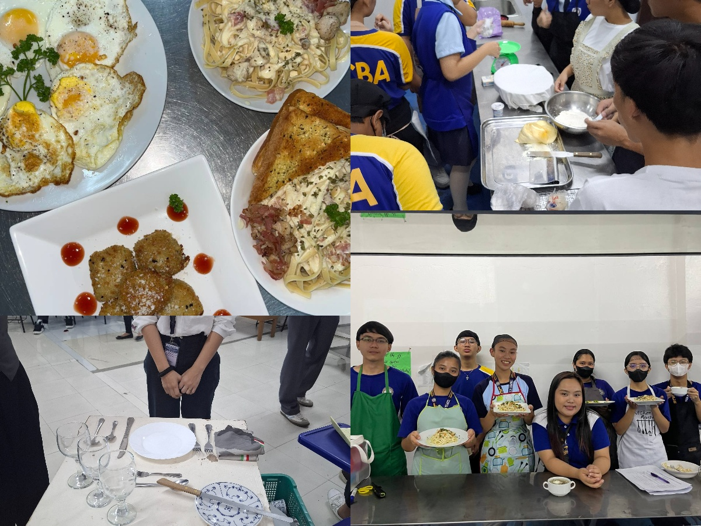
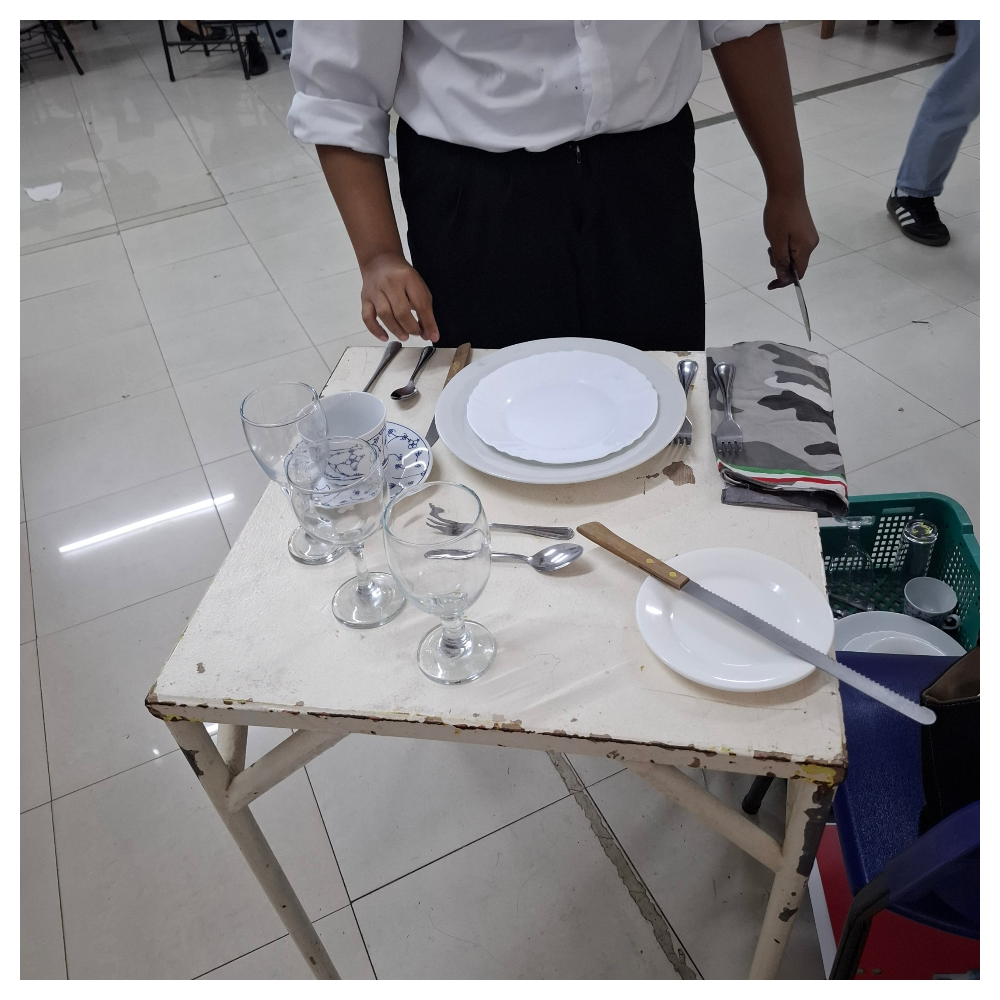

The TVL HE (Technical-Vocational Livelihood Home Economics) Strand is one of the programs offered under LCBAs Senior High School TVL Track.
The TVL HE Strand is best suited for students who enjoy cooking, baking, and food preparation, and are interested in careers related to hospitality, tourism, or caregiving. It is ideal for learners who prefer hands-on and practical training, and who want to gain skills for employment or entrepreneurship after Senior High School. This strand is also a great choice for those with a strong interest in service-oriented professions.
Main Goal of TVL HE
The TVL HE Strand aims to:
Equip students with livelihood and service skills
Provide real-world training for employment or business
Prepare learners for TESDA certifications
Develop entrepreneurial skills in home-based and hospitality careers

What Students Learn in TVL HE
Cookery and Baking
Housekeeping ang Hospitality Services
Tourism and Events Managemant
Caregiving and Health Services
Beauty and Welness
Entrepreneurship and Livelihood Skills
What Students Learn in TVL HE
The learning ability of the students in Home Economics is an important aspect because its the subject that helps the students understand life skills such as cooking, budgeting, and home management. Good learning skills in the subject help the students apply the theoretical concepts in real life effectively. It also promotes the development of critical thinking skills in the students in case of any challenge in the future in terms of home or personal life. The skills help the students become responsible and independent in the future.
Cookery and Baking
Food preparation and cooking techniques
Baking breads, pastries, and desserts
Kitchen safety and sanitation
Housekeeping and Hospitality Services
Proper cleaning and room maintenance
Hotel and lodging service procedures
Customer service skills
Tourism and Events Managemant
Tour guiding basics
Travel and hospitality operations
Event planning and management
Caregiving and Health Services
Basic caregiving skills
Assisting children, elderly, or patients
Health and wellness support
Beauty and Welness
Haircare and skincare services
Personal grooming and wellness training
Entrepreneurship and Livelihood Skills
Starting small businesses
Product marketing and selling
Managing food or service-related enterprises
Opportunities and Advantages of Learning Home Economics
By studying Home Economics, you are given an opportunity to learn new skills such as cooking, sewing, and managing a home. These skills help you become more independent and confident. In addition, you can learn how to budget, plan your meals, and maintain your health. These are important skills that can help you in your future. By understanding Home Economics, you are given an opportunity to pursue a career in food, hospitality, and even entrepreneurship. In essence, it equips you with skills that help you save time, money, and effort while preparing you for real-life challenges.
Advantages of Choosing TVL HE
Choosing this strand helps students:
Gain practical skills for everyday life and careers
Become job-ready after Senior High School
Qualify for TESDA National Certificates
Start small businesses like catering or baking
Prepare for hospitality and service-related college courses
Possible TESDA Certifications
Possible TESDA Certifications
Cookery NC II
Bread and Pastry Production NC II
Housekeeping NC II
Caregiving NC II
Food and Beverage Services NC II
These certifications increase employability locally and abroad.

Courses and Career Opportunities
Home Economics also offers a wide range of job opportunities in food service, hospitality, fashion, childcare, and home management, among other areas. In this subject, a student is able to take courses such as cookery, baking and production of pastries, housekeeping, caregiving, as well as dressmaking, which offer job-ready skills to those who take it up as a course of study. This subject also equips a student with opportunities to become an entrepreneur, as it offers a wide range of job opportunities in food business, tailoring, as well as other related businesses, thus offering livelihood skills as well as job opportunities locally or internationally.